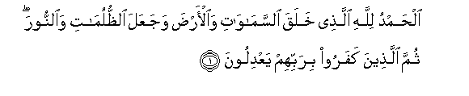
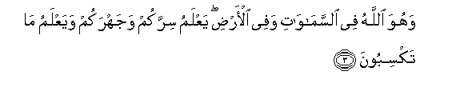
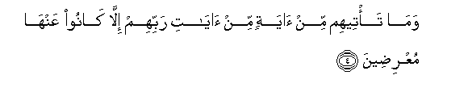
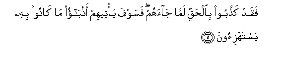
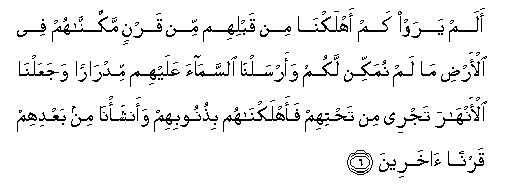
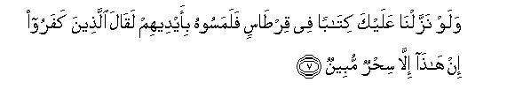
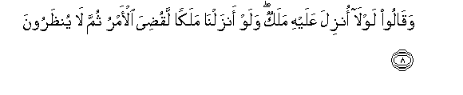
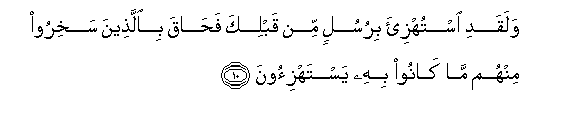

Sacred Texts Islam Index
Hypertext Qur'an Unicode Palmer Pickthall Yusuf Ali English Rodwell
Sūra VI.: An’ām, or Cattle. Index
Previous Next

The Holy Quran, tr. by Yusuf Ali, [1934], at sacred-texts.com
Sūra VI.: An’ām, or Cattle.
Section 1

1. Alhamdu lillahi allathee khalaqa alssamawati waal-arda wajaAAala alththulumati waalnnoora thumma allatheena kafaroo birabbihim yaAAdiloona
1. Praise be to God,
Who created the heavens
And the earth,
And made the Darkness
And the Light.
Yet those who reject Faith
Hold (others) as equal.
With their Guardian-Lord.
2. Huwa allathee khalaqakum min teenin thumma qada ajalan waajalun musamman AAindahu thumma antum tamtaroona
2. He it is Who created
You from clay, and then
Decreed a stated term
(For you). And there is
In His Presence another
Determined term; yet
Ye doubt within yourselves!

3. Wahuwa Allahu fee alssamawati wafee al-ardi yaAAlamu sirrakum wajahrakum wayaAAlamu ma taksiboona
3. And He is God
In the heavens
And on earth.
He knoweth what ye
Hide, and what ye reveal,
And He knoweth
The (recompense) which
Ye earn (by your deeds)

4. Wama ta/teehim min ayatin min ayati rabbihim illa kanoo AAanha muAArideena
4. But never did a single
One of the Signs
Of their Lord reach them,
But they turned
Away therefrom.

5. Faqad kaththaboo bialhaqqi lamma jaahum fasawfa ya/teehim anbao ma kanoo bihi yastahzi-oona
5. And now they reject
The truth when it reaches
Them: but soon shall they
Learn the reality of what
They used to mock at.

6. Alam yaraw kam ahlakna min qablihim min qarnin makkannahum fee al-ardi ma lam numakkin lakum waarsalna alssamaa AAalayhim midraran wajaAAalna al-anhara tajree min tahtihim faahlaknahum bithunoobihim waansha/na min baAAdihim qarnan akhareena
6. See they not how many
Of those before them
We did destroy?—
Generations We had established
On the earth, in strength
Such as We have not given
To you—for whom
We poured out rain
From the skies in abundance,
And gave (fertile) streams
Flowing beneath their (feet):
Yet for their sins
We destroyed them,
And raised in their wake
Fresh generations
(To succeed them).

7. Walaw nazzalna AAalayka kitaban fee qirtasin falamasoohu bi-aydeehim laqala allatheena kafaroo in hatha illa sihrun mubeenun
7. If We had sent
Unto thee a written
(Message) on parchment,
So that they could
Touch it with their hands,
The Unbelievers would
Have been sure to say:
"This is nothing but
Obvious magic!"

8. Waqaloo lawla onzila AAalayhi malakun walaw anzalna malakan laqudiya al-amru thumma la yuntharoona
8. They say: "Why is not
An angel sent down to him?"
If We did send down
An angel, the matter
Would be settled at once,
And no respite
Would be granted them.
9. Walaw jaAAalnahu malakan lajaAAalnahu rajulan walalabasna AAalayhim ma yalbisoona
9. If We had made it
An angel, We should
Have sent him as a man,
And We should certainly
Have caused them confusion
In a matter which they have
Already covered with confusion.

10. Walaqadi istuhzi-a birusulin min qablika fahaqa biallatheena sakhiroo minhum ma kanoo bihi yastahzi-oona
10. Mocked were (many)
Apostles before thee;
But their scoffers
Were hemmed in
By the thing that they mocked.